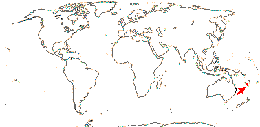
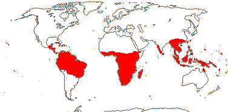

EMBRYOPSIDA Pirani & Prado
Gametophyte dominant, independent, multicellular, not motile, initially ±globular; showing gravitropism; acquisition of phenylalanine lysase [PAL], microbial terpene synthase-like genes +, triterpenoids produced by CYP716 enzymes, phenylpropanoid metabolism [lignans +, flavonoids + (absorbtion of UV radiation)], xyloglucans in primary cell wall, side chains charged; plant poikilohydrous [protoplasm dessication tolerant], ectohydrous [free water outside plant physiologically important]; thalloid, leafy, with single-celled apical meristem, tissues little differentiated, rhizoids +, unicellular; chloroplasts several per cell, pyrenoids 0; glycolate metabolism in leaf peroxisomes [glyoxysomes]; centrioles/centrosomes in vegetative cells 0, microtubules with γ-tubulin along their lengths [?here], interphase microtubules form hoop-like system; metaphase spindle anastral, predictive preprophase band + [with microtubules and F-actin; where new cell wall will form], phragmoplast + [cell wall deposition centrifugal, from around the anaphase spindle], plasmodesmata +; antheridia and archegonia jacketed, surficial; blepharoplast +, centrioles develop de novo, bicentriole pair coaxial, separate at midpoint, centrioles rotate, associated with basal bodies of cilia, multilayered structure + [4 layers: L1, L4, tubules; L2, L3, short vertical lamellae] (0), spline + [tubules from L1 encircling spermatid], basal body 200-250 nm long, associated with amorphous electron-dense material, microtubules in basal end lacking symmetry, stellate array of filaments in transition zone extended, axonemal cap 0 [microtubules disorganized at apex of cilium]; male gametes [spermatozoids] with a left-handed coil, cilia 2, lateral; oogamy; sporophyte multicellular, cuticle +, plane of first cell division transverse [with respect to long axis of archegonium/embryo sac], sporangium and upper part of seta developing from epibasal cell [towards the archegonial neck, exoscopic], with at least transient apical cell [?level], initially surrounded by and dependent on gametophyte, placental transfer cells +, in both sporophyte and gametophyte, wall ingrowths develop early; suspensor/foot +, cells at foot tip somewhat haustorial; sporangium +, single, terminal, dehiscence longitudinal; meiosis sporic, monoplastidic, MTOC [MTOC = microtubule organizing centre] associated with plastid, sporocytes 4-lobed, cytokinesis simultaneous, preceding nuclear division, quadripolar microtubule system +; wall development both centripetal and centrifugal, 1000 spores/sporangium, sporopollenin in the spore wall laid down in association with trilamellar layers [white-line centred lamellae; tripartite lamellae]; nuclear genome size [1C] <1.4 pg, main telomere sequence motif TTTAGGG, LEAFY and KNOX1 and KNOX2 genes present, ethylene involved in cell elongation; chloroplast genome with close association between trnLUAA and trnFGAA genes [precursors for starch synthesis], tufA gene moved to nucleus; mitochondrial trnS(gcu) and trnN(guu) genes +.
Many of the bolded characters in the characterization above are apomorphies of subsets of streptophytes along the lineage leading to the embryophytes, not apomorphies of crown-group embryophytes per se.
All groups below are crown groups, nearly all are extant. Characters mentioned are those of the immediate common ancestor of the group, [] contains explanatory material, () features common in clade, exact status unclear.
STOMATOPHYTES
Abscisic acid, L- and D-methionine distinguished metabolically; pro- and metaphase spindles acentric; sporophyte with polar transport of auxins, class 1 KNOX genes expressed in sporangium alone; sporangium wall 4≤ cells across [≡ eusporangium], tapetum +, secreting sporopollenin, which obscures outer white-line centred lamellae, columella +, developing from endothecial cells; stomata +, on sporangium, anomocytic, cell lineage that produces them with symmetric divisions [perigenous]; underlying similarities in the development of conducting tissue and of rhizoids/root hairs; spores trilete; shoot meristem patterning gene families expressed; MIKC, MI*K*C* genes, post-transcriptional editing of chloroplast genes; gain of three group II mitochondrial introns, mitochondrial trnS(gcu) and trnN(guu) genes 0.
[Anthocerophyta + Polysporangiophyta]: gametophyte leafless; archegonia embedded/sunken [only neck protruding]; sporophyte long-lived, chlorophyllous; cell walls with xylans.
POLYSPORANGIOPHYTA†
Sporophyte well developed, branched, branching apical, dichotomous, potentially indeterminate; hydroids +; stomata on stem; sporangia several, terminal; spore walls not multilamellate [?here].
TRACHEOPHYTA†
Vascular tissue + [tracheids, walls with bars of secondary thickening].
EXTANT TRACHEOPHYTA / VASCULAR PLANTS
Sporophyte with photosynthetic red light response, stomata open in response to blue light; plant homoiohydrous [water content of protoplasm relatively stable]; control of leaf hydration passive; plant endohydrous [physiologically important free water inside plant]; (condensed or nonhydrolyzable tannins/proanthocyanidins +); xyloglucans with side chains uncharged [?level], in secondary walls of vascular and mechanical tissue; lignins +; stem apex multicellular, with cytohistochemical zonation, plasmodesmata formation based on cell lineage; tracheids +, in both protoxylem and metaxylem, G- and S-types; sieve cells + [nucleus degenerating]; endodermis +; leaves/sporophylls spirally arranged, blades with mean venation density ca 1.8 mm/mm2 [to 5 mm/mm2], all epidermal cells with chloroplasts; sporangia adaxial, columella 0; tapetum glandular; ?position of transfer cells; MTOCs not associated with plastids, basal body 350-550 nm long, stellate array in transition region initially joining microtubule triplets; suspensor +, shoot apex developing away from micropyle/archegonial neck [from hypobasal cell, endoscopic], root lateral with respect to the longitudinal axis of the embryo [plant homorhizic].
[MONILOPHYTA + LIGNOPHYTA]Sporophyte endomycorrhizal [with Glomeromycota]; growth ± monopodial, branching spiral; roots +, endogenous, positively geotropic, root hairs and root cap +, protoxylem exarch, lateral roots +, endogenous; G-type tracheids +, with scalariform-bordered pits; leaves with apical/marginal growth, venation development basipetal, growth determinate; sporangium dehiscence by a single longitudinal slit; cells polyplastidic, MTOCs diffuse, perinuclear, migratory; blepharoplasts +, paired, with electron-dense material, centrioles on periphery, male gametes multiciliate; chloroplast long single copy ca 30kb inversion [from psbM to ycf2]; mitochondrion with loss of 4 genes, absence of numerous group II introns; LITTLE ZIPPER proteins.
LIGNOPHYTA†
Sporophyte woody; stem branching lateral, meristems axillary; lateral root origin from the pericycle; cork cambium + [producing cork abaxially], vascular cambium bifacial [producing phloem abaxially and xylem adaxially].
SEED PLANTS†
Plants heterosporous; megasporangium surrounded by cupule [i.e. = unitegmic ovule, cupule = integument]; pollen lands on ovule; megaspore germination endosporic [female gametophyte initially retained on the plant].
EXTANT SEED PLANTS / SPERMATOPHYTA
Plant evergreen; nicotinic acid metabolised to trigonelline, (cyanogenesis via tyrosine pathway); microbial terpene synthase-like genes 0; primary cell walls rich in xyloglucans and/or glucomannans, 25-30% pectin [Type I walls]; lignin chains started by monolignol dimerization [resinols common], particularly with guaiacyl and p-hydroxyphenyl [G + H] units [sinapyl units uncommon, no Maüle reaction]; root stele diarch to pentarch, xylem and phloem originating on alternating radii, cork cambium deep seated; stem apical meristem complex [with quiescent centre, etc.], plasmodesma density in SAM 1.6-6.2[mean]/μm2 [interface-specific plasmodesmatal network]; eustele +, protoxylem endarch, endodermis 0; wood homoxylous, tracheids and rays alone, tracheid/tracheid pits circular, bordered; mature sieve tube/cell lacking functioning nucleus, sieve tube plastids with starch grains; phloem fibres +; cork cambium superficial; leaf nodes 1:1, a single trace leaving the vascular sympodium; leaf vascular bundles amphicribral; guard cells the only epidermal cells with chloroplasts, stomatal pore with active opening in response to leaf hydration, control by abscisic acid, metabolic regulation of water use efficiency, etc.; axillary buds +, exogenous; prophylls two, lateral; leaves with petiole and lamina, development basipetal, lamina simple; sporangia borne on sporophylls; spores not dormant; microsporophylls aggregated in indeterminate cones/strobili; grains monosulcate, aperture in ana- position [distal], primexine + [involved in exine pattern formation with deposition of sporopollenin from tapetum there], exine and intine homogeneous, exine alveolar/honeycomb; ovules with parietal tissue [= crassinucellate], megaspore tetrad linear, functional megaspore single, chalazal, sporopollenin 0; gametophyte ± wholly dependent on sporophyte, development initially endosporic [apical cell 0, rhizoids 0, etc.]; male gametophyte with tube developing from distal end of grain, male gametes two, developing after pollination, with cell walls; female gametophyte initially syncytial, walls then surrounding individual nuclei; embryo cellular ab initio, suspensor short-minute, embryonic axis straight [shoot and root at opposite ends; plant allorhizic], cotyledons 2; embryo ± dormant; chloroplast ycf2 gene in inverted repeat, trans splicing of five mitochondrial group II introns, rpl6 gene absent; whole nuclear genome duplication [ζ - zeta - duplication], two copies of LEAFY gene, PHY gene duplications [three - [BP [A/N + C/O]] - copies], 5.8S and 5S rDNA in separate clusters.
ANGIOSPERMAE / MAGNOLIOPHYTA
Lignans, O-methyl flavonols, dihydroflavonols, triterpenoid oleanane, apigenin and/or luteolin scattered, [cyanogenesis in ANA grade?], lignin also with syringyl units common [G + S lignin, positive Maüle reaction - syringyl:guaiacyl ratio more than 2-2.5:1], hemicelluloses as xyloglucans; root cap meristem closed (open); pith relatively inconspicuous, lateral roots initiated immediately to the side of [when diarch] or opposite xylem poles; origin of epidermis with no clear pattern [probably from inner layer of root cap], trichoblasts [differentiated root hair-forming cells] 0, hypodermis suberised and with Casparian strip [= exodermis]; shoot apex with tunica-corpus construction, tunica 2-layered; starch grains simple; primary cell wall mostly with pectic polysaccharides, poor in mannans; tracheid:tracheid [end wall] plates with scalariform pitting, wood parenchyma +; sieve tubes enucleate, sieve plate with pores (0.1-)0.5-10< µm across, cytoplasm with P-proteins, not occluding pores of plate, companion cell and sieve tube from same mother cell; ?phloem loading/sugar transport; nodes 1:?; dark reversal Pfr → Pr; protoplasm dessication tolerant [plant poikilohydric]; stomata brachyparacytic [ends of subsidiary cells level with ends of pore], outer stomatal ledges producing vestibule, reduction in stomatal conductance with increasing CO2 concentration; lamina formed from the primordial leaf apex, margins toothed, development of venation acropetal, overall growth ± diffuse, secondary veins pinnate, fine venation hierarchical-reticulate, (1.7-)4.1(-5.7) mm/mm2, vein endings free; flowers perfect, pedicellate, ± haplomorphic, protogynous; parts free, numbers variable, development centripetal; P +, ?insertion, members each with a single trace, outer members not sharply differentiated from the others, not enclosing the floral bud; A many, filament not sharply distinguished from anther, stout, broad, with a single trace, anther introrse, tetrasporangiate, sporangia in two groups of two [dithecal], each theca dehiscing longitudinally by a common slit, ± embedded in the filament, walls with at least outer secondary parietal cells dividing, endothecium +, cells elongated at right angles to long axis of anther; tapetal cells binucleate; microspore mother cells in a block, microsporogenesis successive, walls developing by centripetal furrowing; pollen subspherical, tectum continuous or microperforate, ektexine columellate, endexine lamellate only in the apertural regions, thin, compact, intine in apertural areas thick, pollenkitt +; nectary 0; carpels present, superior, free, several, ascidiate [postgenital occlusion by secretion], stylulus at most short [shorter than ovary], hollow, cavity not lined by distinct epidermal layer, stigma ± decurrent, carinal, dry; suprastylar extragynoecial compitum +; ovules few [?1]/carpel, marginal, anatropous, bitegmic, micropyle endostomal, outer integument 2-3 cells across, often largely subdermal in origin, inner integument 2-3 cells across, often dermal in origin, parietal tissue 1-3 cells across, nucellar cap?; megasporocyte single, hypodermal, functional megaspore lacking cuticle; female gametophyte lacking chlorophyll, not photosynthesising, four-celled [one module, nucleus of egg cell sister to one of the polar nuclei]; ovule not increasing in size between pollination and fertilization; pollen grains land on stigma, bicellular at dispersal, mature male gametophyte tricellular, germinating in less than 3 hours, pollen tube elongated, unbranched, growing between cells, growth rate (20-)80-20,000 µm/hour, apex of pectins, wall with callose, lumen with callose plugs, penetration of ovules via micropyle [porogamous], whole process takes ca 18 hours, distance to first ovule 1.1-2.1 mm; male gametes lacking cell walls, ciliae 0, siphonogamy; double fertilization +, ovules aborting unless fertilized; P deciduous in fruit; mature seed much larger than fertilized ovule, small [], dry [no sarcotesta], exotestal; endosperm +, cellular, development heteropolar [first division oblique, micropylar end initially with a single large cell, divisions uniseriate, chalazal cell smaller, divisions in several planes], copious, oily and/or proteinaceous, embryo short [<¼ length of seed]; plastid and mitochondrial transmission maternal; Arabidopsis-type telomeres [(TTTAGGG)n]; nuclear genome size [1C] <1.4 pg [mean 1C = 18.1 pg, 1 pg = 109 base pairs], whole nuclear genome duplication [ε/epsilon event]; ndhB gene 21 codons enlarged at the 5' end, single copy of LEAFY and RPB2 gene, knox genes extensively duplicated [A1-A4], AP1/FUL gene, palaeo AP3 and PI genes [paralogous B-class genes] +, with "DEAER" motif, SEP3/LOFSEP and three copies of the PHY gene, [PHYB [PHYA + PHYC]]; chloroplast chlB, -L, -N, trnP-GGG genes 0.
[NYMPHAEALES [AUSTROBAILEYALES [[CHLORANTHALES + MAGNOLIIDS] [MONOCOTS [CERATOPHYLLALES + EUDICOTS]]]]]: wood fibres +; axial parenchyma diffuse or diffuse-in-aggregates; pollen monosulcate [anasulcate], tectum reticulate-perforate [here?]; ?genome duplication; "DEAER" motif in AP3 and PI genes lost, gaps in these genes.
[AUSTROBAILEYALES [[CHLORANTHALES + MAGNOLIIDS] [MONOCOTS [CERATOPHYLLALES + EUDICOTS]]]]: phloem loading passive, via symplast, plasmodesmata numerous; vessel elements with scalariform perforation plates in primary xylem; essential oils in specialized cells [lamina and P ± pellucid-punctate]; tension wood + [reaction wood: with gelatinous fibres, G-fibres, on adaxial side of branch/stem junction]; tectum reticulate; anther wall with outer secondary parietal cell layer dividing; nucellar cap + [character lost where in eudicots?]; 12BP [4 amino acids] deletion in P1 gene.
[[CHLORANTHALES + MAGNOLIIDS] [MONOCOTS [CERATOPHYLLALES + EUDICOTS]]] / MESANGIOSPERMAE: benzylisoquinoline alkaloids +; sesquiterpene synthase subfamily a [TPS-a] [?level], polyacetate derived anthraquinones + [?level]; outer epidermal walls of root elongation zone with cellulose fibrils oriented transverse to root axis; P more or less whorled, 3-merous [?here]; pollen tube growth intra-gynoecial; extragynoecial compitum 0; carpels plicate [?here]; embryo sac bipolar, 8 nucleate, antipodal cells persisting; endosperm triploid.
[MONOCOTS [CERATOPHYLLALES + EUDICOTS]]: (extra-floral nectaries +); (veins in lamina often 7-17 mm/mm2 or more [mean for eudicots 8.0]); (stamens opposite [two whorls of] P); (pollen tube growth fast).
[CERATOPHYLLALES + EUDICOTS]: ethereal oils 0.
EUDICOTS: (Myricetin, delphinidin +), asarone 0 [unknown in some groups, + in some asterids]; root epidermis derived from root cap [?Buxaceae, etc.]; (vessel elements with simple perforation plates in primary xylem); nodes 3:3; stomata anomocytic; flowers (dimerous), cyclic; protandry common; K/outer P members with three traces, ("C" +, with a single trace); A ?, filaments fairly slender, anthers basifixed; microsporogenesis simultaneous, pollen tricolpate, apertures in pairs at six points of the young tetrad [Fischer's rule], cleavage centripetal, wall with endexine; G with complete postgenital fusion, stylulus/style solid [?here]; seed coat?
[PROTEALES [TROCHODENDRALES [BUXALES + CORE EUDICOTS]]]: (axial/receptacular nectary +).
[TROCHODENDRALES [BUXALES + CORE EUDICOTS]]: benzylisoquinoline alkaloids 0; euAP3 + TM6 genes [duplication of paleoAP3 gene: B class], mitochondrial rps2 gene lost.
[BUXALES + CORE EUDICOTS]: mitochondrial rps11 gene lost.
CORE EUDICOTS / GUNNERIDAE: (ellagic and gallic acids +); leaf margins serrate; compitum + [one position]; micropyle?; γ whole nuclear genome duplication [palaeohexaploidy, gamma triplication], PI-dB motif +, small deletion in the 18S ribosomal DNA common.
[ROSIDS ET AL. + ASTERIDS ET AL.] / PENTAPETALAE: root apical meristem closed; (cyanogenesis also via [iso]leucine, valine and phenylalanine pathways); flowers rather stereotyped: 5-merous, parts whorled; P = calyx + corolla, the calyx enclosing the flower in bud, sepals with three or more traces, petals with a single trace; stamens = 2x K/C, in two whorls, internal/adaxial to the corolla whorl, alternating, (numerous, but then usually fasciculate and/or centrifugal); pollen tricolporate; G [5], G [3] also common, when [G 2], carpels superposed, placentation axile, style +, stigma not decurrent; compitum +; endosperm nuclear; fruit dry, dehiscent, loculicidal [when a capsule]; RNase-based gametophytic incompatibility system present; floral nectaries with CRABSCLAW expression; (monosymmetric flowers with adaxial/dorsal CYC expression).
[BERBERIDOPSIDALES [SANTALALES [CARYOPHYLLALES + ASTERIDS]]] / ASTERIDS ET AL. / SUPERASTERIDS : ?
[SANTALALES [CARYOPHYLLALES + ASTERIDS]]: ?
[CARYOPHYLLALES + ASTERIDS]: seed exotestal; embryo long.
ASTERIDS / Sympetalae redux? / ASTERIDAE / ASTERANAE Takhtajan: nicotinic acid metabolised to its arabinosides; (iridoids +); tension wood decidedly uncommon; C enclosing A and G in bud, (connate [sometimes evident only early in development, petals then appearing to be free]); anthers dorsifixed?; if nectary +, gynoecial; G [2], style single, long; ovules unitegmic, integument thick, endothelium +, nucellar epidermis does not persist; exotestal [!: even when a single integument] cells lignified, esp. on anticlinal and/or inner periclinal walls; endosperm cellular.
[ERICALES [ASTERID I + ASTERID II]]: (ovules lacking parietal tissue) [tenuinucellate].
[ASTERID I + ASTERID II] / CORE ASTERIDS / EUASTERIDS Back to Main Tree
Plants woody, evergreen; ellagic acid 0, non-hydrolysable tannins not common; vessel elements long, with scalariform perforation plates; nodes 3:3; sugar transport in phloem active; inflorescence usu. basically cymose; flowers rather small [<8 mm across]; C free or basally connate, valvate, petals often with median adaxial ridge and inflexed apex; A = and opposite sepals or P, (numerous [usu. associated with increased numbers of C or G]), free to basally adnate to C; G #?; ovules 2/carpel, apical, pendulous; fruit a drupe, drupe ± flattened, surface ornamented; seed single; duplication of the PI gene.
Age. Bremer et al. (2004) estimated an age of around 123 m.y. for this node, Nylinder et al. (2012: suppl.) an age of 126.2-111.2 m.y., Soltis et al. (2008) ages of 124-106(-85) m.y.a., and Foster et al. (2016a: q.v. for details) an age of ca 109 m.y.; Bell et al. (2010) suggested ages of (109-)100, 93(-85) m.y. and (116-)108, 99(-93) m.y. in the supplement, Tank and Olmstead (2017), Magallón et al. (2015) and Tank et al. (2015: Table S1) ages of around (131.2-)117.1(-102.9), 106.7 and 97.2/106.2 m.y. respectively, Lemaire et al. (2011b) offered estimates of (125-)114(-101) m.y., (117-)112, 102(-97) m.y. is the age in Wikström et al. (2001 and (123-)119(-113) m.y. in Wikström et al. (2015). Rather younger ages are around 96.1 m.y.a. (Naumann et al. 2013), N. Zhang et al. (2012) auggested (96-)83(-68) m.y. and Xue et al. (2012) ages of 80.7-78.3 m.y. ago. At ca 130 m.y.a. the age in Z. Wu et al. (2014) is the oldest.
Evolution: Divergence & Distribution. From fossil evidence Martínez-Millán (2010) suggested a late date of 55-33.9 m.y.a. for diversification of most of the euasterid (= asterid I + II/lamiid + campanulid clades) orders, i.e. around the Eocene. This estimate is about half the ages suggested by others, e.g. see Beaulieu et al. (2013) for the ages of the campanulid orders and also the dates immediately above.
In an analysis of floral morphospace in angiosperms, lamiids were found to be significantly different from all other groups, mostly having flowers with sepals and petals, the latter being united, and few stamens and united carpels; campanulids also fit here (c.f. in part Chartier et al. 2014b). The euasterids are notably speciose, although it is more accurate to say that it is the more or less herbaceous and florally flashy members of Lamiales, Gentianales, Solanales, Asterales and Apiales that are speciose and have high diversification rates (Magallón & Sanderson 2001; Magallón & Castillo 2009); Boraginales and Dipsacales are rather smaller. Although Magallón and Sanderson (2001: c.f. dating) suggested that Asterales have the highest diversification rate, the honour went to Lamiales in Magallón and Castillo (2009), but whatever may be driving diversification, it is likely to be combinations of factors that are acting at different places on the tree rather than single factors. Thus within Asterales, for example, although Asteraceae in particular are very speciose, it may be more accurate to say that it is Asteroideae that are so speciose.
Endress (2011a) thought that haplostemony, stamens adnate to petals, and unitegmic ovules were key innovations somewhere around here, but exactly where the last two features in particular are to be placed is unclear, as is becoming evident from his own work (Endress & Rapini 2014).
A number of changes in this area do seem to distinguish the euasterids from other eudicots. Polyandry is more common in other eudicots, and often is independent of any changes in sepal, petal or carpel number; this has been called secondary or complex polyandry, and is associated with features such as complex or ringwall androecial primordia and centrifugal androecial development (e.g. Ronse Decraene & Smets 1992b, 1998c; Endress 2013; Ronse De Craene 2016b). The near absence of such kinds of increase in stamen number as well as the absence or primary polyandry (as in the ANA grade, etc.) in the euasterid clade may reflect a change in underlying floral organisation/development in the stem euasterids, reflected in the rather stereotypic (in terms of basic floral construction) flowers so common here (for further discussion of polyandry see Pentapetalae). A recent analysis of the floral morphospace occupied by members of Ericales (Chartier et al. 2017), sister to euasterids, clarifies the extent of floral variation there. Although three quarters of the order have hermaphroditic flowers with five sepals and five petals, these are plesiomorphic characters (Chartier et al. 2017). The order, and in particular the small family Lecythidaceae, shows considerable androecial variation, somewhat less in the gynoecium and less in the perianth (Chartier et al. 2017). Meristicity varies considerably in Sapotaceae and increases in numbers of all or most parts of the flower are common, however, carpel and stamen number sometimes increased independently of any general changes in meristicity (Kümpers et al. 2016). Comparing floral variation in Ericales (and in clades immediately basal to them, although more general analyses like that of Chartier et al. 2017 have not been carried out) with that in euasterids, it is evident that there is a considerable decrease in variation in asterids, despite the fact that the euasterids have over seven times as many species as Ericales and there was some positive correlation between species number and general floral diversity in Ericales (Chartier et al. 2017; see also Mander 2016).
Patterns of polyandry in the euasterids are rather different from those in more basal clades and is often associated with anisomery, although this is also seen in some rosids, for example (Ronse De Craene 2016b). Exceptions include Crassulaceae and Conostegia (Melastomataceae) where stamen and carpel number may be similar (see Wanntorp et al. 2011 for this and some other examples), Actinidia, where there are many carpels in a single whorl and many stamens, and in some core Caryophyllales (Ronse de Craene 2013). Along with the increase in stamen number, there are also increases in the numbers of perianth parts and/or carpels, the latter being in a single if somewhat bowed whorl. Thus some species of Plerandra s. str. and Tupidanthus (Araliales-Araliaceae) have a kind of fasciation of the flower, and there are about as many stamens as carpels, with well over 100 of both (e.g. Sokoloff et al. 2007b; Nuraliev et al. 2014); perhaps there has been an increase in the size of the floral meristem. Anthocleista and Potalia (Gentianales-Gentianaceae-Potalieae) and some Gentianaceae-Chironieae, with up to 16-merous flowers, Lamiaceae-Symphorematoideae (Lamiales), and Codonaceae, Hoplestigma (Cordiaceae) and Lennoa and relatives (Ehretiaceae), all Boraginales, but not immediately related to each other, are other examples. Dialypetalanthus and Theligonum, both Rubiaceae, have more numerous stamens than would be expected, but how their flowers are constructed is unclear, and this is true of the multistaminate flowers of Eucommia (Garryales). Paracryphiaceae (Paracryphiales) also show interesting variation in floral meristicity.
Ellagic acid is notably uncommon in the euasterids (but see Paracryphiales), although it is scattered through the rosid to Ericales parts of the tree. This is perhaps to be expected, there being a correlation between woodiness and tannin frequency and a negative correlation between tannin (generalized defence) frequency and alkaloid and other secondary metabolites (specific defence) frequencies (e.g. Feeney 1976; Silvertown & Dodd 1996: given the information in Levin 1976 the correlation of alkaloid presence with other features should be re-examined). No large family in the euasterids has more than 50% tanniniferous species, only Rubiaceae and Caprifoliaceae, both with many woody members, being well represented (Mole 1993); the tannins involved are non-hydrolysable tannins. Flowers of Emmotum and fruits of Apodytes (Metteniusaceae, see below) are rich in tannins (Endress & Rapini 2014; Potgieter & van Wyk 1994b). Emission of isoprene gas shows a somewhat similar pattern, being known from Ericales, rosids, and also a few monocots and Magnoliales (see Kesselmeier & Staudt 1999; Sharkey et al. 2013: again, sampling).
The final demise of the old Icacinaceae (Icacinaceae s.l., = the "four basal clades" in the following discussion) should allow us to better understand the evolution of the euasterids as a whole. Icacinaceae s.l. make up all or most of three of the four orders at the base of the lamiids and campanulids. Garryales (the only clade without genera that have not been in Icacinaceae) and Aquifoliales, whose circumscriptions, if somewhat surprising in the context of older ideas of relationships, have been stable for a few years, are immediately sister to the rest of the lamiid and campanulid clades respectively, while Metteniusales and Icacinales (for their relationships and delimitation, see below) are successively sister to the clade [Garryales + other lamiids] (Stull et al. 2015). These clades are morphologically very different from the megadiverse euasterid clades, and to the extent that the old Icacinaceae could be characterised, their characters are those of the euasterid node.
These four small orders include 10 families, about 61 genera, and 717 species (405 of the latter belong to Ilex), yet they vary in many anatomical and floral characters classically considered to be of phylogenetic importance (see below). All members of these clades are woody, nearly all have rather small flowers less than 8 mm across, most have fleshy fruits, commonly drupes with quite large seeds, one per loculus and usually only one per fruit (for seed size, see also Moles et al. 2005a).
However, there is a dearth of basic knowledge of many potentially critical characters. Gynoecial evolution is particularly perplexing - or perhaps it only seems to be because so little is known about gynoecial development and morphology in this area (but see Endress & Rapini 2014 for the way forward). González and Rudall (2010) speculated that the bicarpellate gynoecium of Lamiales, Gentianales and Solanales was derived from the pseudomonomerous gynoecium of something like Metteniusa. Although a bicarpellate gynoecium can probably be placed at the [Garryales + Gentianales, etc.] node, both carpel number and ovule number and morphology in Icacinaceae s.l. are unclear (see below, some taxa have ovules with parietal tissue and/or are bitegmic, e.g. Endress & Rapini 2014), hence the characterization of this node.
There are some interesting correlations, for instance, valvate corolla aestivation and petals with pointed, incurved apices and median adaxial ridges. (A corolla with a similar combination of features is common in Apiaceae/Araliaceae, while the valvate sepals of Rhamnaceae also have a longitudinal adaxial ridge.) There is much variation in whether or not the corolla is fused (if it is, it is often only rather shortly connate; corolla tube development is almost entirely unknown) and whether or not the stamens are adnate to the corolla. Indeed, a strongly connate corolla with the stamens adnate some way up the tube is quite uncommon in these orders, although it is found in a few taxa like Metteniusa (Metteniusaceae) and Leptaulus (Cardiopteridaceae).
One set of characters, nodal and wood anatomy, is quite well known thanks to the early work of Bailey and Howard (1941a-d) in particular, while Lens et al. (2008a) have begun to put the variation in a phylogenetic context. Variation such as that in vessel length is included in the characterizations here (see also Lens et al. 2008a: measurements from immature individuals excluded). There are correlations here, too, e.g. unilacunar nodes with simple perforation plates, versus tri- and pentalacunar nodes with scalariform perforation plates (see also Bailey & Howard 1941b). Features like vessel and fibre length also correlate with nodal anatomy, although not in quite such a simple fashion. Lens et al. (2008a) noted that some of these features such as long vessel elements with very scalariform perforation plates are part of up the primitive "Baileyan" wood-anatomical syndrome. Icacinaceae from Eocene Wyoming grew in habitats where there was likely to be readily available water, a low chance of frost, and a multistratified forest (Allen et al. 2015), and extant taxa of these clades are mostly quite large-seeded trees or lianes in l.t.r.f. (not the habitat of Garryales, some Aquifoliales).
Lens et al. (2008a) drew attention to similarities in wood anatomy between the Icacinaceae s.l. and other woody clades, including Garryales, noting that the "primitive" wood characters they emphasized in the Icacinaceae s.l. were also to be found in woody families at the base of various campanulid clades. Lens et al. (2008a) mentioned Rousseaceae, sister to Campanulaceae and in turn sister to other Asterales, while Carpodetus, also Rousseaceae, has a corolla similar to that of Icacinaceae. Columelliaceae (Bruniales), Adoxaceae (Dipsacales), most Cornales (and c.f. flowers in Cornus, etc.), and Pennantia (Apiales-Pennatiaceae; again, c.f. flowers in many Apiales) are also involved. Although Ericaceae were also mentioned, they are deeply embedded in Ericales, but some Tetrameristaceae do have flowers similar to those of old Icacinaceae. Moreover, within Lamiales and Apiales in particular there are more or less species-poor basal pectinations made up largely of woody taxa. In Apiales, these plants (including Pennantiaceae) have fleshy and few-seeded fruits, while much of the diversity is in the predominantly herbaceous Apiaceae with small, dry, 2-seeded fruits (see also Nicolas & Plunkett 2014: position of Pennantiaceae still not certain). Grubbiales, Escalloniales and Paracryphiales are are small and overwhelmingly woody clades.
This reorganization also affects how we think of floral evolution in the euasterids. Although the genes involved in the development of monosymmetric flowers in Senecio vulgaris (Asteraceae) are described as being homologous to those in Antirrhinum (Plantaginaceae), they are regulated and expressed differently, growth in the adaxial part of the corolla being reduced and that in the abaxial part increased, the reverse of what goes on in Antirrhinum (Garcês et al. 2016).
Ecology & Physiology. Leaf size shows a sharp decrease around here (Cornwell et al. 2014). Cornwell et al. (2008) found that litter decomposition of the forbs that predominate in the euasterids was faster than that of graminoids, and although he did not compare deciduous trees and forbs, breakdown of litter was faster in deciduous trees than in evergreen trees; such differences affect the rate of nutrient cycling.
In both campanulids and lamiids there are many annuals and herbaceous to shrubby perennials, and many of these have very small seeds of 10-2 grams or less (Moles et al. 2005a; Linkies et al. 2010). Seed coats with a mechanical layer more than a single cell thick are scattered throughout BLAs, but euasterid seed coats are rather different, usually being only one or two cells across (Convolvulaceae are a notable exception). Haig and Westoby (1991) discuss situations in which small seeds may be at an advantage. However, plants in these four basal clades have rather larger seeds, and since the fruits of most are drupes, the seed coat is not well developed; large seeds are probably linked to their arborescent habit and predominantly rainforest habitat.
The annual habit of many eusterids may be connected with different mechanisms of phloem transport. Taxa with active phloem loading are particularly common here. Sugars, and sometimes also sugar alcohols, not in particularly high concentration in leaf tissues, are pumped into the phloem via a symplastic pathway by the metabolic activities of the plant, plasmodesmatal connections between the sieve tube and other cells being poorly developed (Rennie & Turgeon 2009; Turgeon 2010b; Fu et al. 2011). This may be associated with herbivore deterrence, the sugars causing dessication of the tissues of the herbivore, and/or cellular debris quickly clogs the sieve pores, sealing the phloem, and/or the plant economizes on sugar production (Turgeon 2010b; Fu et al. 2011). Since woody euasterids have "herbaceous" mechanisms of sugar transport, the correlation may be phylogenetic and less immediately associated with plant habit. A somewhat different focus on/classification of transport types suggests that one active transport mechanism, the synthesis and transport of raffinose family oligosaccharides, shows little correlation with plant habit but some correlation with climate, being relatively more common in plants from warmer parts of the world, and also with phylogeny, being restricted to Lamiales in the euasterids (Davidson et al. 2011). However, although the literature on this topic is quite extensive, it is not easy to follow. Thus the classifications of phloem transport types in Gamalei (1989) Davison et al. (2011) and Fu et al. (2011) are somewhat different, some types are still heterogeneous (Fu et al. 2011), and an "intermediate" type figures prominently (e.g. Gamalei 1989; Davidson et al. 2010). Family circumscriptions have also been changing over the last thirty years (e.g. c.f. Gamalei 1991; van Bel & Gamalei 1992; Davidson 2011), so genera should be assigned to their current families before being compared.
Conclusion of the first two sections. Much of the previous discussion is rather anecdotal, and ecological parallelisms must play a role in producing similarities between taxa. However, evolutionary patterns in the asterids as a whole need reappraisal in the light of the dissolution of the old Icacinaceae. All in all, the four basal euasterid clades that now include the bulk of the family are rather different from the other often much more speciose euasterid clades, and in some respects, including their preferred habitats, these clades are more similar to Ericales, rosids, and the like.
Genes & Genomes. For a possible duplication of the PI gene here or in the lamiids, see Viaene et al. (2009), but more detailed sampling is required to fully understand the pattern of duplication and loss of this gene; no duplication was recorded from Ilex. Studies on the duplication of the RPB2 gene show that the I copy persists in most of the lamiids almost alone in the Pentapetalae (see also discussion under Pentapetalae), as well as in Ericales (Oxelman et al. 2004b).
Chemistry, Morphology, etc. In the following discussion, C = Cardiopteridaceae, I = Icacinaceae s. str., M = Metteniusaceae, and S = Stemonuraceae.
There are two ovules in the gynoecia of most Icacinaceae s.l., and it is commonly assumed that they are in a single carpel. Thus Fagerlind (1945) and Mauritzon (1936c) describe those Icacinaceae s.l. that they examined (S, C) as having a single fertile carpel with two ovules/carpel. However, González and Rudall (2010) described a single ovule developing in each of two small abaxial carpels in the five-carpellate Metteniusa (M). Since there are no septae, this is a form of parietal placentation, and given the findings of Endress and Rapini (2014) in Emmotum (M), this gynoecial morphology should be confirmed. Emmotum has three fertile carpels, each with 1-2 ovules, and these carpels seem to be the three abaxial members of a basically 5-carpellate flower (Endress & Rapini 2014). Poraqueiba (M) initially has three locules, but two are obliterated. Scattered throughout the old Icacinaceae are taxa with styles that are not terminal (Casimirella - I; this can have three styles), or the styles are asymmetric (Cardiopteris - C), or the single style has two bumps/reduced styles at the base (Raphiostylis - M; Citronella - C; Mappia - I). Indeed, sometimes the styles might better be called styluli, each coming from a single carpel (see González & Rudall 2010). Apodytes (M) appears to have two connate styles, while Sleumer (1971) described the style of Nothapodytes (I) as being dimorphic. Finally, Apodytes (M) and a group of genera including Medusanthera (S) have a very asymmetric ovary (see below).
Ovule morphology is practically unknown, as is confirmed by the recent unexpected finding that the ovules of Emmotum (M) are bitegmic while those of Metteniusa (M) are unitegmic (c.f. González & Rudall 2010; Endress & Rapini 2014), Cassinopsis and Phytocrene (both I) are apically bitegmic, while the ategmic nature of the ovules of Cardiopteris (C: Kong et al. 2002, 2014; Kong & Schori 2014) may be the least of their oddities. Ovules may have parietal tissue or lack it, i.e. be crassinucellate or tenuinucellate, and there has been some discussion as to whether having a thin nucellus meant that the ovules were effectively tenuinucellate (e.g. Mauritzon 1936c; Fagerlind 1945a).
Fruits in general are single-seeded and drupaceous, although details of their morphology, sometimes rather complex, are poorly known (see Baillon 1874 for a few details). The fruits of Emmotum (M) are sometimes 3-seeded (Sleumer 1942). Although Oncotheca has five fertile carpels, each with two ovules, seed set is poor, there being usually only one, sometimes two or three, seeds per fruit (Dickison 1986). The fruits are often somewhat flattened and/or with a prominent vertical meridional ridge; they may be very asymmetric, as in Apodytes (M: a sterile carpel? - Potgieter & van Wyk 1994), or in Medusandra and relatives (S), but other taxa also have more or less curved fruits and the loculus of the seed sometimes has a large longitudinal inpushing. The testa is ruminate, especially in Pyrenacantha (I) and relatives.
Comparative phytochemical studies on Aquifoliales, Garryales, Metteniusales and Icacinales are much needed.
Phylogeny. Relationships at the base of the lamiid and campanulid clades have long been uncertain. Aquifoliaceae were included in the campanulids by Gustafsson et al. (1996) and B. Bremer (1996). However, the I copy of the duplicated RPB2 gene is retained in most of the lamiids as well as in Aquifoliaceae (and other Aquifoliales?), and there is a comparable pattern in the loss of introns 18-23 in the d copy. This might suggest that Aquifoliales belong to the lamiids (Oxelman et al. 2004b). Both Garrya and Eucommia have only the d copy, perhaps a feature of Garryales in particular. Sampling needs to be improved, but optimisation of the persistence/loss of the I copy on the asterid tree will probably be difficult (Oxelman et al. 2004b). Aquifoliaceae also seem to lack the PI duplication of other euasterids (Viaene et al. 2009: no other Aquifoliales examined).
In an analysis of nuclear genes, N. Zhang et al. (2012) found an [Aquifoliales + Garryales] clade sister to the lamiids as did Zeng et al. (2017: also sometimes paraphyletic at base...) but relationships here was not the focus of the latter study in particular. In one analysis using 18S/26S nuclear ribosomal data Maia et al. (2014) recovered a topology [Helwingiaceae [Cardiopteridaceae [Aquifoliaceae [Garryales + other lamiids]]]], but with little support; Icacinaceae, etc., were not included. Qiu et al. (2011) found the relationships [[paraphyletic Icacinaceae plus Garryales [Aquifoliaceae + lamiids]] [other campanulids]], although support was again weak. Sun et al. (2014: chloroplast data) found that Ilex and Garrya (the only members of their respective clades examined) switched positions in analyses of mitochondrial genome data, and the two formed a clade sister to the lamiids when nuclear data were examined. Most recent analyses (e.g. Sun et al. 2014: chloroplast data) do place Aquifoliales sister to all other campanulids, and that is their position here.
Although Garryales were often found to be sister to (most of) the rest of the lamiids (e.g. Lens et al. 2008a: maximum parsimony analyses), the composition of any clades immediately basal to them was unclear. Oncothecaceae have been placed in this area, but neither they nor the other taxa mentioned immediately below linked strongly (e.g. Kårehed 2001, 2002b; for the position of Oncothecaceae, see Cameron 2001, 2003; Olmstead et al. 2000; B. Bremer et al. 2002). Thus B. Bremer (2002) found [Oncotheca + Apodytes] and [Cassinopsis, Icacina, Pyrencantha] clades, but neither was well supported. In a parsimony analysis of combined molecular and morphological data Lens et al. (2008a) found a clade [Oncothecaceae + some ex-Icacinaceae (taxa assigned to Metteniusaceae below + Cassinopsis)] to be sister (72% bootstrap) to other lamiids, while in a Bayesian analysis this clade was joined by Garryales (but with little support for the enlarged clade); the other lamiids formed a clade with 1.0 p.p. support. Relationships remained unclear in a study that focussed on the large lamiid clades (Refulio-Rodriguez & Olmstead 2014), but sampling here was skimpy. Nazaire et al. (2014: Suppl. Fig. 4A) found Oncothecaceae, Garryales and Icacinaceae to form a grade at the base of the lamiid clade, but support was weak.
Some of the Icacinaceae had already moved. Thus Irvingbaileya and Gomphandra were placed with strong support in Aquifoliales (D. Soltis et al. 2000), and the group moving there was expanded by Kårehed (2001). Within Aquifoliales, there is very strong support for the basic structure [[Cardiopteridaceae + Stemonuraceae] [Ilex [Phyllonoma + Helwingia]]] (Kårehed 2001; only 1 sp. of Ilex included; Lens et al. 2008b; Tank & Olmstead 2017: 3/5 families included). Cardiopteridaceae and Stemonuraceae are both very largely populated by ex-icacinaceous genera. Although a grouping [Cardiopteridaceae + Pentaphylacaceae] had weak support in an earlier single gene analysis (Savolainen et al. 2000b), the latter family is in Ericales here.
Resolving the relationships of the remaining genera that used to be in Icacinaceae is critical. Pyrenacantha, Chlamydocarya, Sarcostigma, Iodes, and Icacina (here all Icacinaceae) form a clade in the rbcL tree of Savolainen et al. (2000b), although placed (but with very little support) at the base of the rosids; these genera belong to Icacinaceae group III of Bailey and Howard (1941). There was initially only weak support for Icacinaceae in this position (D. Soltis et al. 2000), but Kårehed (2001) identified four ex-Icacinaceous groups associated with Garryales: Icacinaceae, and the Cassinopsis, Emmotum and Apodytes groups (here all Metteniusaceae: see also B. Bremer et al. 2002: 4 genera included). The Bayesian analysis of Soltis et al. (2007) recovered Icacina as sister to all other lamiid taxa included (0.99 pp), while Soltis et al. (2011) found very weak support for an association of Icacina with Garryales, but Oncotheca was not a member of this clade, although support for its position (the whole lot formed a paraphyletic assemblage at the base of the lamiids) was very weak. Icacinaceae s. str., strongly supported as being monophyletic, were consistently sister to a [Boraginales, Gentianales, Lamiales, Solanales] clade, but with appreciable support only when morphological data were added to the molecular data (Lens et al. 2008a). Icacina does not link with Garryales in the tree provided Bell et al. (2010), but joins the lamiid backbone at a node above.
In morphological phylogenetic analyses Metteniusa fits quite comfortably into Cardiopteridaceae, ex Icacinaceae (Kårehed 2001), in Aquifoliales here. However, molecular analyses suggest a position in the lamiids. Petiole anatomy, carpel number, etc., are similar to Oncothecaceae (Icacinales here) in particular (González & Rudall 2007, esp. 2010; González et al. 2007), and recent molecular work suggests relationships with another clade of ex-Icacinaceae, within which it is well embedded, Metteniusaceae s.l. (Stull et al. 2015).
Angulo et al. (2013) recovered a well supported Icacinaceae s. str., but relationships between the seven genera of ex-Icacinaceae in the study (Metteniusa was not included) and the position of Garryaceae varied in the analyses of ndhF and ndhF plus morphological data. Byng et al. (2014) found four clades, Icacinaceae s. str. and the Apodytes, Emmotum and Calatola groups, Cassinopsis was by itself, and relationships between all five were unclear. There was some Bayesian support for the grouping [Cassinopsis + Icacinaceae s. str.], and there was weak support for a clade [Oncotheca + the Apodytes group]. Just looking at Chinese taxa, Z.-D. Chen et al. (2016) recovered a very poorly supported grouping [Metteniusaceae [[Icacinaceae + Garryaceae] other lamiids]].
However, in an analysis of chloroplast genomes with very good generic-level sampling, Stull et al. (2015) found two major clades. One includes the well supported Apodytes, Emmotum and Calatola groups (= Metteniusales); Metteniusa was well embedded in the second group and perhaps sister to Ottoschulzia. The other clade had the structure [Oncotheca [Cassinopsis + Icacinaceae s. str.]] (= Icacinales). The overall topology at the base of the lamiids is [Icacinales [Metteniusales [Garryales + other lamiids]].
Classification. Of the two major clades recovered by Stull et al. (2015) above, the first is recognized here as Metteniusaceae-Metteniusales, and the second, made up of Oncothecaceae and Icacinaceae s. str., is treated below as Icacinales.
ASTERID I / LAMIIDAE Back to Main Tree
? - 8 orders, 46 families, 50,740 species.
Age. Bell et al. (2010) estimate a crown-group age for this clade of (109-)99, 91(-80) m.y., Bremer et al. (2004: c.f. topology) an age of ca 119 m.y., Magallón and Castillo (2009) an age of ca 96.85 m.y., and Nylinder et al. (2012: suppl.) an age of about 119.8 m.y., Lemaire et al. (2011b) date it to ca 102 m.y., Magallón et al. (2015) to around 101.5 m.y.a., Wikström et al. (2015: topology!) to (120-)114(-107) m.y.; 96.4 m.y. is the age of an (Oncothecaceae + Vahliaceae) clade in Tank et al. (2015: Table S1), but there is no clade [Oncothecaceae + Icacinaceae]. - Check and integrate - Wikström et al. (2001) estimated an age of (112-)107, 100(-95) m.y. for the crown group.
ICACINALES van Tieghem Main Tree.
Endosperm copious, embryo long. - 2 families, 24 genera, 202 species.
Age. Wikström et al. (2015: note topology) estimate the age for this clade to be (117-)110(-100) m. years.
Note: Boldface denotes possible apomorphies, (....) denotes a feature common in the clade, exact status uncertain, [....] includes explanatory material. Note that the particular node to which many characters, particularly the more cryptic ones, should be assigned is unclear. This is partly because homoplasy is very common, in addition, basic information for all too many characters is very incomplete, frequently coming from taxa well embedded in the clade of interest and so making the position of any putative apomorphy uncertain. Then there are the not-so-trivial issues of how character states are delimited and ancestral states are reconstructed (see above).
Includes: Icacinaceae, Oncothecaceae
Synonymy: Oncothecales Doweld - Icacinanae Doweld
ONCOTHECACEAE Airy Shaw Back to Icacinales
Evergreen trees; chemistry?, tanniniferous cells +; cork cambium outer cortical; vessel elements [460-(868-)1229(-1757) µm long, fibres [820-(1100-)1597(-2080)-2370] µm long; nodes 5:5; petiole bundles arcuate, complex; astrosclereids +; stomatal accessory cells divided; plant glabrous; lamina vernation "convolute", margin with caducous glands, petiole short; inflorescences axillary, cymose, branched; K ± free, quincuncial, C quincuncial, basally connate, lacking median adaxial ridge and incurved apex; A adnate to C, extrorse, anthers bisporangiate, dithecal, filaments shorter than anthers; pollen 3-colporate, small [10-13 μm long]; nectary?; G [5], opposite C, styles ± separate, conduplicate, stigma punctate; ovules (1), epitropous, campylotropous, integument 4-7 cells across, "crassinucellate", funicle long; fruit not flattened, stone 1-3-seeded; cotyledons short; n = 25.
1[list]/2. New Caledonia.
Evolution. Ecology & Physiology. Oncotheca balansae, at least, is a nickel hyperaccumulator (Brooks 1998).
Chemistry, Morphology, etc. Measurements of fibre and vessel length above that are in square brackets come from Baas (1975) who provided two sets of non-overlapping measurements for each, but without comment. The stomata, perhaps modified paracytic, are distinctive.
Carpenter and Dickison (1976) described the stamens as being opposite the petals, but drew them as being opposite the sepals; the latter position is more likely (see also Dickison & Bittrich 2016). Oncotheca macrocarpa (McPherson et al. 1981, = O. humboldtiana) has stamens quite unlike those of O. balansae; the incurved, pointed connectives of stamens of the latter are responsible for the generic name. The ventral carpellary bundles of O. macrocarpa are distinct and opposite the loculi, those of O. humboldtiana are fused, separating only towards the top of the ovary and then running in the septal radii (Dickison 1986c).
Additional information is taken from Dickison (1982: anatomy), Lobreau-Callen (1977: pollen), and Carpenter (1975) and Dickison and Bittrich (2016: as Metteniusaceae), both general.
Oncothecaceae are embryologically unknown.
Previous relationships. The family was included in Theales by Cronquist (1981) and Takhtajan (1997), although relationships with Aquifoliaceae had been suggested (see Carpenter & Dickison 1976 for literature).
ICACINACEAE Miers, nom. cons. Back to Icacinales
Evergreen trees; ?iridoids; tangential vessel element multiples ±+; (vasicentric axial parenchyma +); stomata cyclocytic (anomocytic); (lamina margin serrate); pedicel articulated; K free to connate basally, C ± free; A free, filaments ?shorter than anthers; 1 carpel fertile; ovule lacking parietal tissue; (fruit ± compressed, ridged); seed coat?, testal bundles 0.
23[list]/200. Largely Pantropical (map: Sleumer 1971a; Utteridge & Brummitt 2007; Trop. Afr. Fl. Pl. Ecol. Distr. 5. 2010).
Age. Bremer et al. (2004) suggested an age of around 115 m.y. for this clade and Wikström et al. (2015) an age of (115-)102(-74) m. years.
1. Cassinopsis Sonder
Verbascosides +; vessel elements 1,139-2,200(-2,900) µm long, fibres 1,700-3,120(-3,800) µm long; (axillary thorns +); leaves opposite, vernation conduplicate; K basally connate, C imbricate, lacking median adaxial ridge and incurved apex, slightly connate basally; A basally epipetalous; nectary 0; (2 carpels fertile), style excentric; ovule (1/carpel), partly bitegmic, integument to 10 cells across; embryo short; (fruit asymmetrically flattened); n = ?
1/6-11: Africa and Madagascar.
2. Icacinoideae Sonder
Monoterpene indole/quinoline alkaloid camptothecin and derivatives +; vessel elements with simple perforation plates, 175-860(-1,200) µm long, fibres 650-1,630(-2,300) µm long; nodes 1:1; C valvate, with an adaxial ridge, (apically incurved); A ± free.
22/163: Pantropical, inc. W. Pacific, to China and Japan.
2A. Mappieae Baillon
Inflorescence cymose; nectary 0; style +, stigma capitate to punctate; chalazal endosperm haustorium + [Nothapodytes]; n = ?
2/9. Tropical America, Sri Lanka, India, East Asia, Malesia.
[Icacineae [Iodeae + Phytocreneae]]: (lianes, secondary thickening anomalous).
2B. Icacineae Engler
(Tuberous); (lamina margin dentate); (nectary +); (styles 2-3 - Casimirella); endosperm starchy ["seed starchy": Merrilliodendron]; n = 24.
7/35. Tropical Africa and America, Merrilliodendron east Malesia and west Pacific.
[Iodeae + Phytocreneae]: ?
2C. Iodeae Engler
Lianes, climbing by non-axillary branch tendrils or twining; secondary thickening often atypical [included phloem +, etc.]; medullary bundles + [Iodes]; (plant dioceous); nectary 0; style short/0, stigma broad; n = 10.
2/31: Iodes (29). Tropical Africa, Madagascar, south China to New Guinea and the Solomon Islands.
2D. Phytocreneae Bentham & J. D. Hooker
(Stem base massively swollen), (roots swollen); lamina (margins toothed), (palmately lobed), (secondary veins palmate); dioecy common; inflorescences racemose, spicate, capitate; K ± free, (0 – Pyrenacantha); (C connate - Natsiatopsis, some Pyrenacantha); (nectary +; glands between stamens - Hosiea); integument 7-10 cells across, (ovule apically bitegmic - Phytocrene); (C accrescent, surrounding fruit - Pyrenacantha); endocarp pitted; endosperm ruminate, (± 0 - Sarcostigma); n = 11, 20.
10/88: Pyrenacantha (30). Africa-Madagascar, Southeast Asia and Indo Malesia to N.E. Australia.
To integrate: petiole bundles arcuate and with wing bundles, or annular (and with medullary bundles); leaves (opposite), conduplicate(-plicate); pollen usu. porate, echinate; style +, stigma punctate to broad (lobed, with processes), or style 0, stigma capitate; ovule (1/carpel), integument vascularized/not, funicular obturator +; (embryo short); seedling with hypocotyl, phanerocotylar.
Evolution: Divergence & Distribution. Icacinaceae were widespread and diverse in the Northern Hemisphere during the Palaeocene/Eocene, with genera now restricted to Southeast Asia-Malesia then growing in North America and Europe, Iodes, with fossil endocarps up to 52 m.y.o., being a good example (Rankin et al. 2008; Stull et al. 2011; Stull et al. 2016). All told, there are 7 genera and 21 species from the London Clay flora alone (Stull et al. 2016). Endocarps identifiable as the Old World Phytocreneae are known from both North and South America in Palaeocene deposits about 60-58 m.y.o. (Stull et al. 2012). For other fossils of Iodeeae, see Pigg et al. (2008a), for pollen, see Manchester et al. (2015).
Ecology & Physiology. There are about ? species of lianes in Icacinaceae. These often have vessels with simple perforation plates, and a correlation between the liane habit and simple vessels has been noted here and elsewhere (Carlquist 1991b; Isnard & Feild 2015).
For the protective indole alkaloid camptothecin, found in a number of genera, see Lorence and Nessler (2004). The enzyme that camptothecin targets does occur in Icacinaceae, but it is probably protected by a change in its amino acid sequence (Sirikantaramas et al. 2009).
Bacterial/Fungal Associations. Camptothecin may be derived from secologanin, and ultimately it may be synthesized by an endophytic fungus related to something like Rhizopus oryzae or the glomeromcyete Entrophosphora (Puri et al. 2005; Wink 2008; Shweta et al. 2010).
Chemistry, Morphology, etc. Hosiea, with its long-petiolate leaves that have palmate venation and long-dentate margins, is particularly distinctive vegetatively. The leaf teeth of Pyrenacantha are well-developed, robust, almost tubular affairs; leaf tooth morphology would repay investigation.
Phytocreneae (Stachyanthus, Miquelia, Phytocrene and Pyrenacantha) have fruits with somewhat flattened and pock-marked stones, the outer cells of the sclereidal layer having sinuous, interdigitating, anticlinal walls. Invaginations of the stone often signal invaginations of the endosperm (Stull et al. 2012 and references). For the fruit morphology of Cassinopsis, see Potgieter et al. (1994b).
For additional information, see Sleumer (1942a, 1971a), Howard (1942a, b), Kårehed (2001, 2002b), Utteridge et al. (2005) and Potgieter and Duno (2016), all general, also Kaplan et al. (1991: chemistry) and Guo et al. (2015: camptothecin and derivatives), Cremers (1973, 1974: growth patterns), Bailey and Howard (1941a-d) and Lens et al. (2008a: measurements here = range of means and upper end of variation, immature specimens excluded), all vascular anatomy, Heintzelmann and Howard (1948: crystals and indumentum), van Staveren and Baas (1973: epidermis), Baas (1973: epidermis, 1974: stomata), Teo and Haron (1999: anatomy), Lobreau-Callen (1972, 1973, 1977, 1980), pollen, Mauritzon (1936c), Fagerlind (1945a) and Mauritzon in Sleumer (1942: Pyrenacantha), embryology, and Baillon (1874), Potgieter and van Wyk (1994a), Rankin et al. (2008) and Pigg et al. (2008a), fruit anatomy, the two latter focus on fossils.
The family is very poorly known embryologically.
Phylogeny. Relationships in Lens et al. (2008a) were [[Nothapodytes + Mappia] [Natsiatum [[Iodes, Pyrenacantha, etc.] [Icacina, Alsodeiopsis]]]], although the last pair of sister taxa were not recovered in Bayesian analyses. There were similar relationships in Angulo et al. (2013: one gene, moderate to good support): [[Nothapodytes + Mappia] [[Iodes, Pyrenacantha, etc.] [Icacina, Leretia etc.]]]. Trees with this basic topology were also recovered by Stull et al. (2015); the position of Cassinopsis as sister to all other Icacinaceae had only moderate support, but that of the [Nothapodytes + Mappia] clade as sister to the rest and also many other groupings had strong support.
Classification. For some generic limits, see Byng et al. (2014).
Previous Relationships. Other genera that used to be included in Icacinaceae are placed in the campanulids, i.e. in Aquifoliales (as Cardiopteridaceae and Stemonuraceae) and Apiales (as Pennantiaceae, but position there still a bit suspect); see also Metteniusales.
Synonymy: Iodaceae van Tieghem, Phytocrenaceae R. Brown, Pleurisanthaceae van Tieghem, Sarcostigmataceae van Tieghem